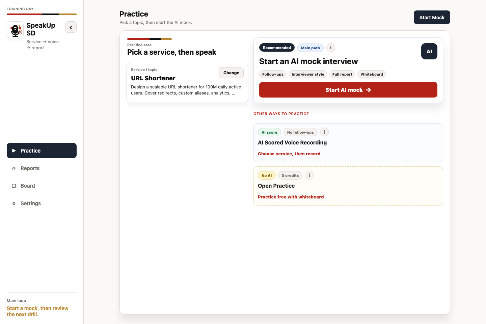
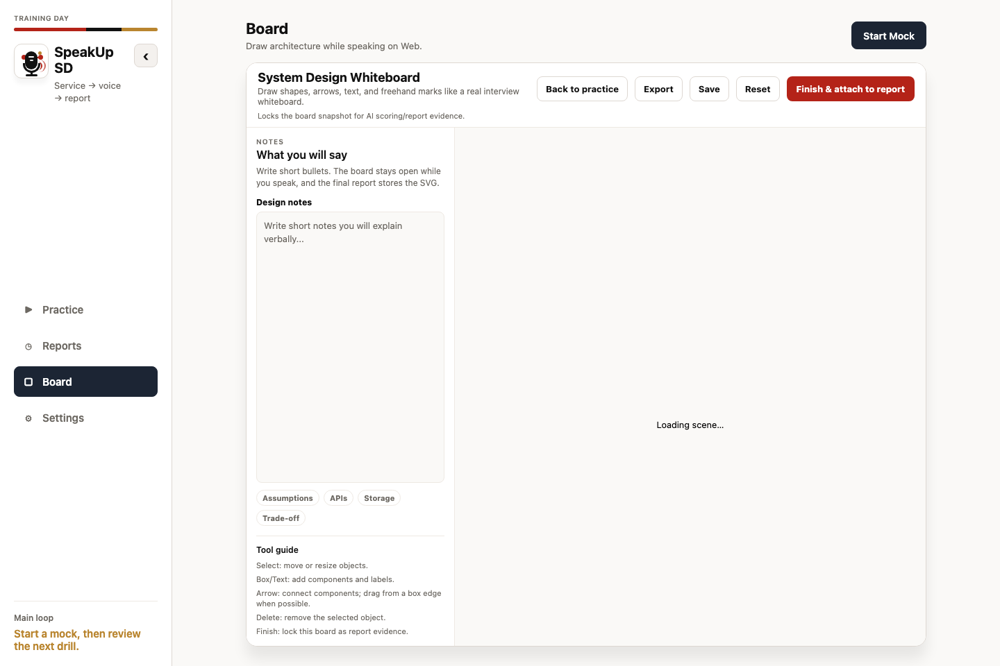
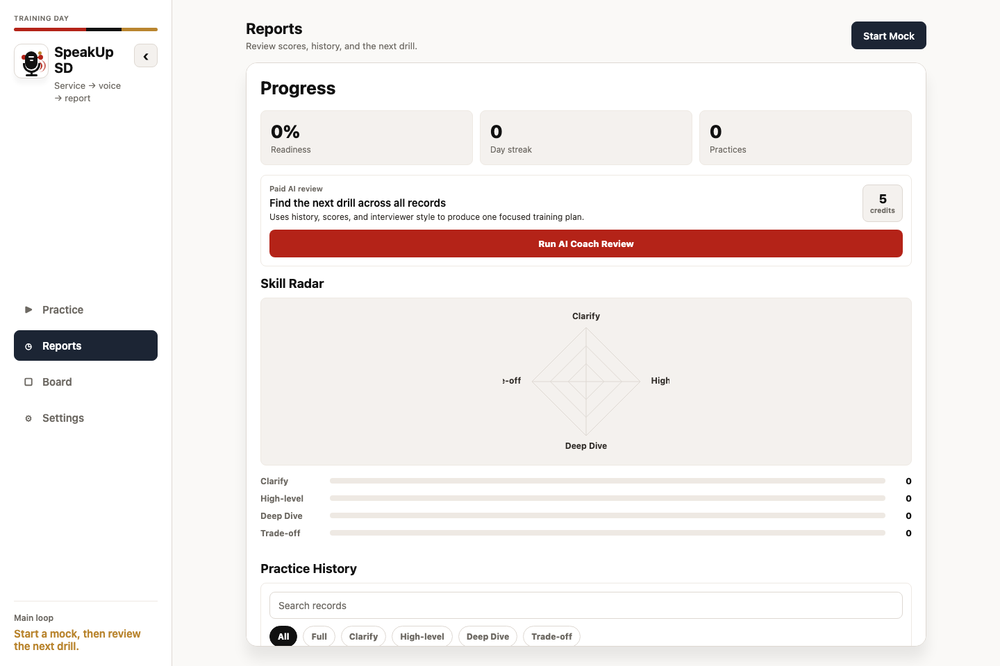

Pick a prompt
Choose a system design scenario and prepare your first approach.
System design interview practice
SpeakUp SD gives candidates a focused workspace for voice mock interviews, architecture whiteboarding, and clear AI feedback after each session.

Product


Workflow
Choose a system design scenario and prepare your first approach.
Explain assumptions, constraints, architecture, scaling, and tradeoffs.
Use the report to refine structure, clarity, and missing details.
Trust
The public page is intentionally simple: product positioning, screenshots, and links. It does not expose application source code, internal specifications, credentials, builds, or deployment details.